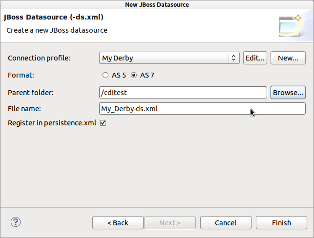

< Main Index CDI Tools>
persistence.xml registration
Now when you generate a new -ds.xml file using New JBoss Datasource wizard you can generate/update the corresponding persistence.xml file.

Related Jira